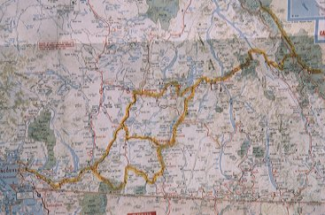
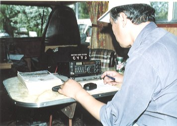
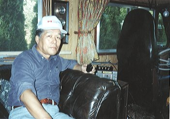
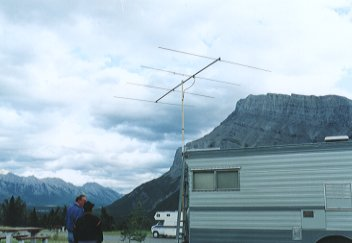
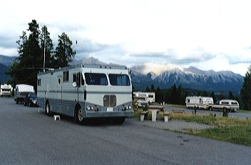
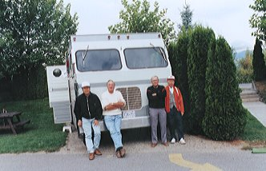

1992年8月28日から9月6日まで、カナダの特別局CY7Jを運用する機会を得ました。
この局は「6mモービル局」として一ヶ月間の限定免許で許可されたものです。
今回の計画ではカナダのブリティシュ・コロンビア州（VE7）のバンクーバーからアルバータ州（VE6）のバンフまで、
往復約2000Kmを6mを中心に移動運用しようというものです。
この時期は残念ながら6mでJAに対するオープンのチャンスはほとんどゼロに近いものでしたが、
夏休みを利用しての運用とあってJAの6m各局にはオープンを期待しない様に前もって伝えておきました？。
JAはともかくもVEのローカル局かEsで北米ぐらいはQSO出来るのではないかと秘かに期待していたのですが、
現地入りしてこの考えも甘かったことを思い知らされたのでした。

CY7Jのカナディアンロッキー越えのコース
【バンクーバー出発】
CY7Jの移動運用に参加した局はVE7ZL（Ralf）、VE7ZQ（Harry）、VE7CPW（Tony）それに当局VE7RJU（JA1RJU）、
とXYL（JI1APU）の5人。2台のキャンピングカーに分乗して出発する事になりました。
8月30日の朝、VE7ZLとVE7ZQの乗る大型モーターホームが一足先に出発。
これを見送った後、私は今回の旅行のもう一つの目的であった"INDY-CARTレース・カナダGP"の決勝を見物に市街地の特別コースに向う。
翌朝、先発のモーターホームを追いかけ、VE7CPWの運転するキャンピングカーでバンクーバーを出発、
一路ハイウェイ１号線を北東へ。
本格的なモービル運用は先発のモーターホームから行うため、
この日のキャンピングカーからの運用は2mレピーターの連絡用だけになりました。
ハイウェイ１号線の途中から新設のバイパス道路、ハイウェイ5号線・コカハラハイウェイ（Coquihalla・Highway）に入り、
午後2時前にバンクーバーから北東約360Kmの町・カムループス（Kamloops）に到着。
ここで先発隊と合流。この付近まで来ると山なみが連なり、いよいよ山岳地帯に近ずいているのが感じられます。
この辺りでは電波の飛びも悪くなり、2mでは通過する町のレピーター以外にアクセス出来なくなってきました。
カムループスから2台で車を連ねて再びハイウェイ1号線を東へ約210Km。
夕方、今日の宿泊地であるカナディアンロッキーの入り口の町、レベルストック（Revelstoke）に到着。
本日の走行、約570Km。


キャンピングカーから運用するCY7J(JA1RJU)
【CY7J、HF運用】
レベルストックの郊外、Three・Valley・Gapのモーテルの駐車場からモーターホームの屋根に上げたGP(CP-4A)で
CY7JをHFで初運用。
道路の両側から2,000m以上もの崖がそびえ立つ谷底からの運用でしたが、14/21MHzの電波は何とか飛んでくれました。
入感するのは北米の局がほとんどでJAの信号はこの時間（08:00JST）には全然入感しませんでした。
もちろん6mの電波などEME以外は1Kmも飛びそうにない場所で、アンテナを上げる気力も無くなりました。
【カナディアンロッキー越え】
2日目はレベルストックからアルバータ州のバンフ（Banff）までの約250Kmの移動。
レベルストックの町を過ぎて間もなくハイウェイ１号線は曲がりくねったロッキー山脈の山岳道路に。
見上げる様なゴツゴツした岩山を縫うようにして走る車窓からときおり峰と峰との間に万年雪や氷河が見え隠れするようになりました。
“こんな場所から6mの電波なんか飛んで行くわけないなー”と指はハンドマイクならぬビデオカメラのシャッターを押し続けたまま。
と、いうわけで、ひそかに期待していたモービルから6mのQSOも早々にアキラメざるを得ませんでした。
電波を出したとしてもこの切り立った山並みを越えて外へ飛んで行くことは無かったでしょう。
【バンフからCY7J/VE6の運用】
夕方、日本からの観光客にもおなじみのバンフの町に到着。バンクーバーとの時差１時間。
バンフ郊外の丘陵地帯にあるキャンプサイトが本日の運用場所となりました。
800台を収容出来るというこの大きなキャンプサイトは景観もすばらしく、電波も何となく飛びそうな雰囲気。
さっそくHFのGPと6mの4エレを上げる。IC-575Dで50.110MHz付近をワッチ。
短時間の運用でQSO出来るほど6mは甘くない事は承知していたとはいえ、
6mではキャリアらしきものはスプリアスも入らないといつた状態でした。
さすがにロケーションは高台だけあって、この場所からのHFの電波は送受とも良好でした。
北米はもちろん南米や太平洋方面がFBに入感しています。
しかし、目指すJAの信号はこの日も全然聞こえて来ません。
この時期はＨＦ帯でもJAに対してパスは良くないとはいえ、今年の夏場は異常にコンデションが落ち込んでいる感じ。
結局、バンフ滞在の2日間に14/21/28MHzではついにJAの信号を聞く事が出来ませんでした。


バンフのキャンプサイトから6mを運用（左）、HF運用時はGPと交換（右）
（前方の山並みはカルガリー方向）
帰路は再び１号線を逆行。レベルストックを過ぎてまもなく1号線から97号線に入り南下。
途中、気候温暖なリゾート地として知られるオカナガン渓谷のケロウナ（Kelowna）へ。
緑がきれいなこの町の郊外にあるキャンプサイトにモーターホームを止める。
モーターホームから運用出来るのは今日が最後となる。
9月4日の午後（日本時間の9月5日午前）から始まったオール・アジア・コンテスト(Fone)でのJAのアクティビティに期待したのですが、
"CQ Contest"を連呼する北米の局は強力に入感するものの、応答するJA局は皆無。
このコンデションは9月5日（日本時間の6日）にバンクーバーへ帰るまで続き、
結果的には往復約2,300Kmの移動運用の期間中、
CY7Jでは6mはおろかHF帯でも1局もJAとQSO出来ないといった予想もしなかった最悪の結果に終わりました。
カナダでの6mのアクティビティはJAと比較にならないほど低いため、
短期間の運用ではQSOのチャンスは少ないだろうと考えてはいましたが、
HF帯でも1局もJAとQSO出来なかったのは正直いってショックでした。
カナダでは“6mの移動局”が特別局として免許されるのも解るような気がしました。

CY7Jのカナディアン・ロッキー越えに参加したメンバー
左からVE7RJU/JA1RJU.VE7CPW.VE7ZL.VE7ZQの各局
|